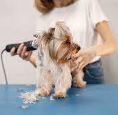

Serviços
nos dedicamos a fornecer uma variedade de serviços especializados para atender às necessidades individuais do seu pet. Nossa equipe experiente e apaixonada está aqui para oferecer cuidados profissionais e atenciosos.

Banho e Tosa
Mime seu pet com nossos serviços de banho e tosa profissional. Nossos groomers experientes cuidarão do seu pet com amor e habilidade, deixando-o com uma aparência impecável e se sentindo revigorado.